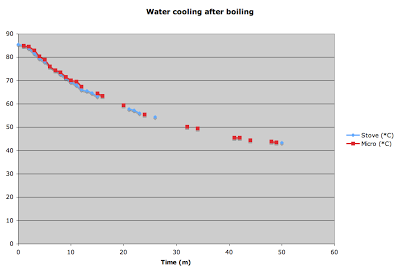

How water is heated does not affect how it cools
Wednesday October 15, 2008
Hypothesis: Water heated in a microwave oven cools more quickly than water heated on a stovetop range.

The two filled glasses were not actually involved.
Experimental apparatus:
- standard candy thermometer
- iPhone stopwatch
- two identical tumblers
- pyrex measuring cup
- microwave
- tea kettle
- gas range
Experimental procedure:
For the microwave test, about two cups of tap water were heated in a standard microwave for about six minutes. The water was observed boiling inside the microwave before heating was stopped. The water was removed from the microwave and a measure of it was poured into a tumbler on a standard dining room table protected by a thin fabric runner. The room was determined by consensus to be at room temperature. Temperature readings were taken at one minute intervals for the first eleven minutes, then intermittently up to 48 minutes, for a total of 22 readings. The initial reading was 85ºC.
For the stovetop test, a tea kettle was half filled and left to boil on a gas burner at high heat. Heating was stopped after the kettle was heard to whistle and let off steam. The water was presumed boiling. A measure of water was poured out just as for the microwave test, and temperature readings were taken at one-minute intervals for the first fifteen minutes, then intermittently until a final reading at 50 minutes, for a total of 21 readings. The initial reading was 186ºF (85.56ºC).
Experimental issues: The thermometer used was intended for cooking, not science. It was only marked to five-degree increments. I read degrees Fahrenheit in the second (stovetop) test in hopes of benefiting from the relative "smallness" of degrees Fahrenheit and then converted to Centigrade.
Analysis: The cooling curves do not appear different for water boiled by microwave versus gas burner.

As you can see, microwave temperatures seem just a bit above those for the stovetop throughout. This distinction is certainly smaller than the error of the instrument, and should be regarded as insignificant. The graph shown adjusts time by one minute so that the samples were at 85ºC simultaneously. If this is not done, the stovetop graph rides just perceptibly above the microwave graph, and just as negligibly.
Observations:
- The temperature initially measured for the fire-heated water was about one half degree Celsius hotter than that for the microwaved water. This may be because I measured it with less delay, or perhaps a tea kettle really can get water one half degree hotter. Even if so, it does not seem a significant victory for the tea kettle.
- No temperature was measured even as high as 86ºC. The water did boil in both cases, and the temperature at which water boils is (by definition) 100ºC. This seems odd at first. Perhaps it is due to some combination of lower air pressure (the elevation of Milwaukee, Wisconsin, is around 634 feet above sea level), impurity of the water, and delay between last boiling and first measurement.
Conclusion: Water cools at the same rate regardless of whether it was boiled by microwave or convection from burning natural gas.
Commentary: This hypothesis was offered by Dylan Carlson, based on anecdotal experience with microwaved beverages cooling more quickly than desired. It was speculated that the different mechanisms of heating, microwave excitation versus convection of heat through a metal container, leave the heated water differently configured at some level; a different liquid crystallography leading to different cooling properties. Similarly disappointed with microwaved beverages from time to time, I became intrigued and then excited to carry out an experimental test of the hypothesis. It is not difficult to become excited about science.
It would have been very interesting to find evidence of different cooling behavior, but alas it seems there is none. The familiar experience that lead to the initial hypothesis may be explained by the difference in volumes of liquid typically heated by microwave versus range. Generally only small amounts of liquid are microwaved, which then cool quickly compared to large volumes. It is not unusual to boil a large volume of liquid on a stovetop, which cools more slowly for its larger mass and is kept warm also by its hot metal container.
Note: The word "how" is used in two slightly different senses in the title of this report. It is the author's belief that the small chance of misreading is compensated for by the snappiness of the title.
This post was originally hosted elsewhere.